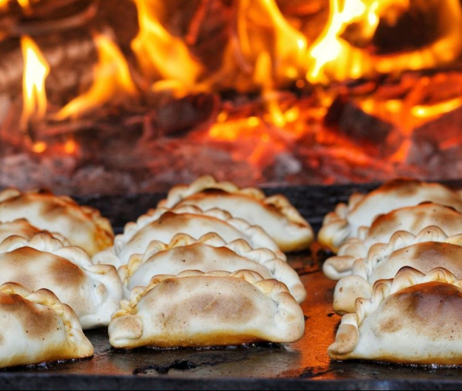
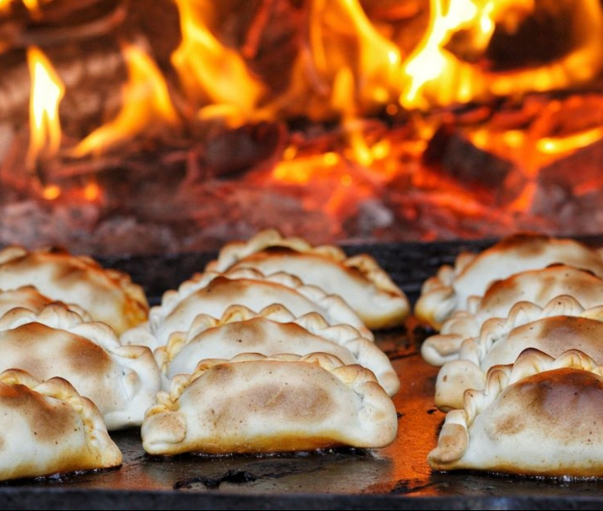

En San Miguel de Tucumán
- Museo Casa Histórica de la Independencia
- Casco Histórico
- Parque 9 de Julio
- Peñas folclóricas
En Yerba Buena
- Reserva y Jardín Botánico de Horco Molle
- Parque Percy Hill
- Avenidas Aconquija y Perón con su oferta comercial y gastronómica
En San Javier
- Complejo Cristo Bendicente
- Cascada del Río Noque
- Parapente
- Tirolesa
- Mapping Cristo Resplandeciente
En El Cadillal
- Kayak en el dique
- Paseo en barco por el dique
- Tirolesa
- Aerosilla
- Museo Arqueológico
En Tafí del Valle
- Estancias jesuíticas
- Museo Jesuítico de La Banda
- Ruta del Artesano "Manos del Valle Calchaquí"
- Cerro de la Cruz
En el Sur Tucumano
- Ruinas Jesuíticas de Lules
- Parque Nacional Aconquija
- Feria de Simoca
- Cascada Los Pizarro
- Dique Escaba
Comidas típicas para probar en Tucumán:
- La empanada tucumana, de carne cortada a cuchillo y 13 repulgues
- Locro
- Humita
- Tamal
- Dulce de cayote y quesillo
- Sandwich de milanesa
Hospedajes en Tucumán
San Miguel de Tucumán cuenta con una multiplicidad de opciones, desde hoteles de diferentes categorías
hasta hostels.
Tafí del Valle es otra de las principales plazas hoteleras con hoteles, hosterías, cabañas y estancias
rurales.
Tips útiles para visitar Tucumán:
Llevar ropa liviana en verano y abrigo en invierno o si se visitará los Valles.
El transporte público es limitado en algunas zonas rurales, por lo que se recomienda alquilar un vehículo.
Los precios en Tucumán son accesibles en comparación con otros destinos turísticos de Argentina.
Si bien se acepta tarjeta y plataformas de pago, se recomienda contar con efectivo al visitar destinos
rurales con
acceso a internet limitado.
Llevar protector solar y repelente de insectos, especialmente si se visita en verano.
Llevar calzado apto para senderismo y camino de montaña en caso de realizar este tipo de actividades.
El comercio suele abrir por la mañana hasta las 13 y luego reabrir desde las 17 hasta las 21 horas.


 
